usa <- st_cast(st_union(aoi_get(state = "conus")), "MULTILINESTRING")
nrow(cities)
#> [1] 31254Week 3
Predicates, Simplification & Tesselations
Last week
We learned about the SRS (Spatial Reference Systems)
They can be geographic (3D, angular units)
Ellipsoid (squished sphere model)
geoid (mathematical model of gravitational field)
datum marks the relationship between the ellipsoid and geoid
can be local (NAD27)
can be global (WGS84, NAD83)
SRS can be projected (x-y axis, measurement units (m), false origin)
All PCS are based on GCS
Projections seek to place the 3D earth on 2D
Does this by defining a plane that can be conic, cylindrical or planar
“unfolding to this plane” creates distortion of shape, area, distance, or direction
The distortion is greater from point/lines of tangency or secanacy
Measures (GEOS Measures)
Measures are the questions we ask about the dimension of a geometry
How long is a line or polygon perimeter (unit)
What is the area of a polygon (unit2)
How far are two object from one another (unit)
Measures come from the GEOS library
Measures are in the units of the base projection
Measures can be Euclidean (PCS) or geodesic (GSC)
geodesic (Great Circle) distances can be more accurate by eliminating distortion
but are much slower to calculate
For example …
# Great Circle Distance in GCS
system.time({x <- st_distance(usa, cities)})
# user system elapsed
# 103.560 1.390 117.128
# Euclidean Distance on PCS
system.time({x <- st_distance(usa, cities, which = "Euclidean")})
# user system elapsed
# 2.422 0.019 2.494 Units
When possible measure operations report results with a units appropriate for the CRS:
co <- st_read("data/co.shp")
#> Reading layer `co' from data source
#> `/Users/mikejohnson/github/csu-ess-523c/slides/data/co.shp'
#> using driver `ESRI Shapefile'
#> Simple feature collection with 64 features and 4 fields
#> Geometry type: MULTIPOLYGON
#> Dimension: XY
#> Bounding box: xmin: -109.0602 ymin: 36.99246 xmax: -102.0415 ymax: 41.00342
#> Geodetic CRS: WGS 84
a <- st_area(co[1,])
attributes(a) |> unlist()
#> units.numerator1 units.numerator2 class
#> "m" "m" "units"The units package can be used to convert between units:
units::set_units(a, km^2) # result in square kilometers
#> 3062.85 [km^2]
units::set_units(a, ha) # result in hectares
#> 306285 [ha]and the results can be stripped of their attributes for cases where numeric values are needed (e.g. math operators and ggplot):
as.numeric(a)
#> [1] 3062849758Topologic Diminsion
A POINT is shape with a dimension of 0 that occupies a single location in coordinate space.
# POINT defined as numeric vector
(st_dimension(st_point(c(0,1))))
#> [1] 0A LINESTRING is shape that has a dimension of 1 (length)
# LINESTRING defined by matrix
(st_dimension(st_linestring(matrix(1:4, nrow = 2))))
#> [1] 1A POLYGON is surface stored as a list of its exterior and interior rings. It has a dimension of 2. (area)
# POLYGON defined by LIST (interior and exterior rings)
(st_dimension(st_polygon(list(matrix(c(1:4, 1,2), nrow = 3, byrow = TRUE)))))
#> [1] 2Predicates
Geometric Interiors, Boundaries and Exteriors
All geometries have interior, boundary and exterior regions.
The terms interior and boundary are used in the context of algebraic topology and manifold theory and not general topology
The OGC has define these states for the common geometry types in the simple features standard:
| Dimension | Geometry Type | Interior (I) | Boundary (B) |
|---|---|---|---|
| Point, MultiPoint | 0 | Point, Points | Empty |
| LineString, Line | 1 | Points that are left when the boundary points are removed. | Two end points. |
| Polygon | 2 | Points within the rings. | Set of rings. |
Interior, Boundary and Exterior: POINTS
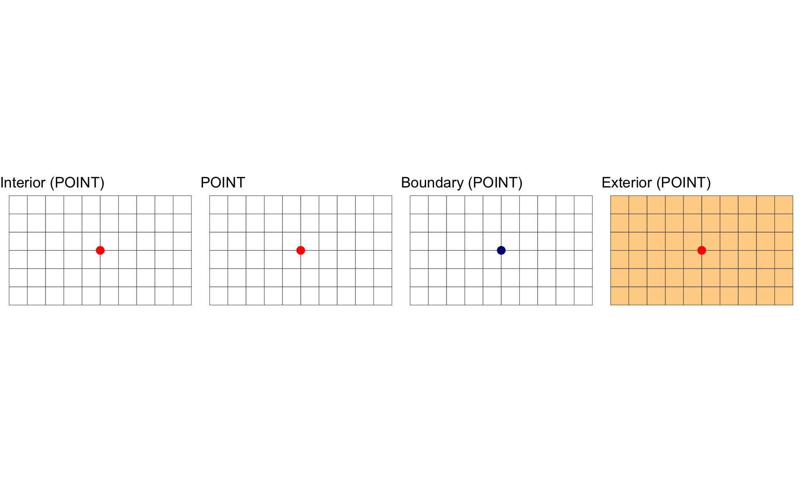
Interior, Boundary and Exterior: LINESTRING
#> Warning: Using `size` aesthetic for lines was deprecated in ggplot2 3.4.0.
#> ℹ Please use `linewidth` instead.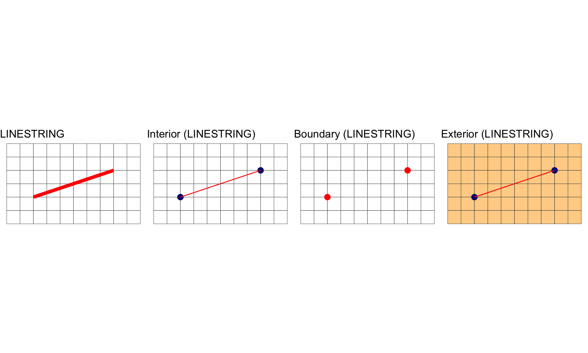
Interior, Boundary and Exterior: POLYGON
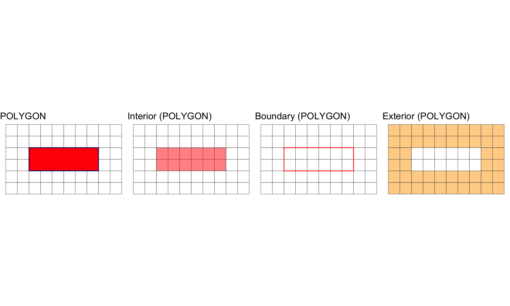
Summary

Predicates
In the following, we are interested in the resulting geometry that occurs when 2 geometries are overlaid…
Overlap is a POINT: 0D

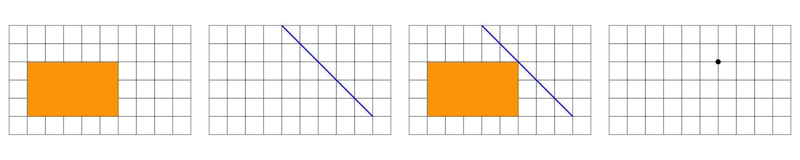
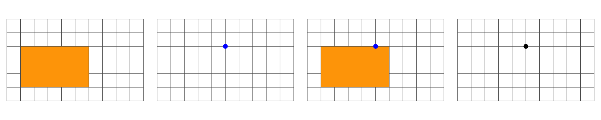
Overlap is a LINESTRING: 1D
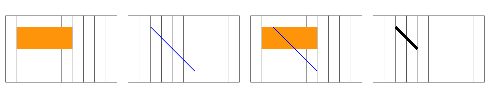

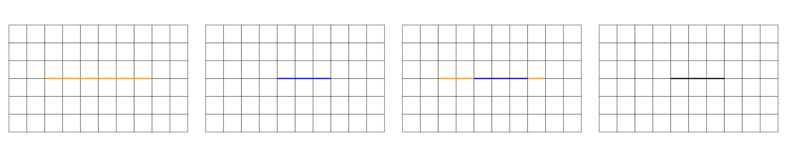
Overlap is a POLYGON: 2D
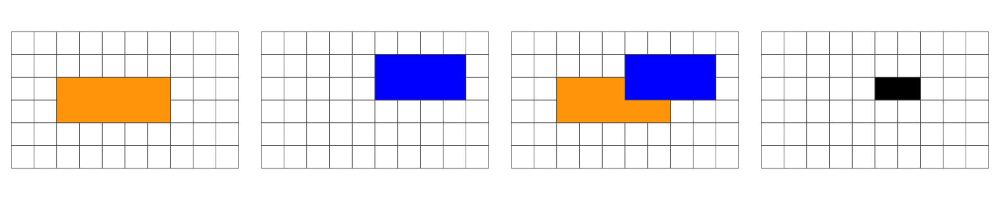
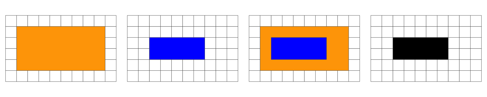
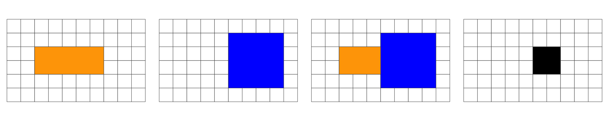
No Overlap = FALSE
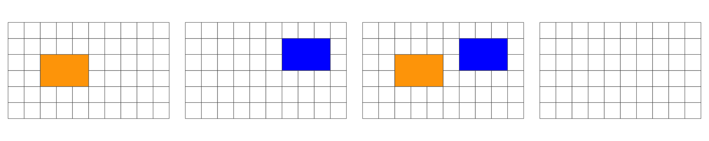
Dimensionally Extended 9-Intersection Model
The DE-9IM is a topological model and (standard) used to describe the spatial relations of two geometries
Used in geometry, point-set topology, geospatial topology
The DE-9IM matrix provides a way to classify geometry relations using the set {0,1,2,F} or {T,F}
With a {T,F} matrix domain, there are 512 possible relations that can be grouped into binary classification schemes.
About 10 of these, have been given a common name such as intersects, touches, and within.
When testing two geometries against a scheme, the result is a spatial predicate named by the scheme.
Provides the primary basis for queries and assertions in GIS and spatial databases (PostGIS).
The Matrix Model
The DE-9IM matrix is based on a 3x3 intersection matrix:
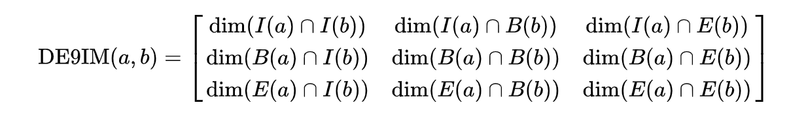
Where:
- dim is the dimension of the intersection and
- I is the interior
- B is the boundary
- E is the exterior
. . .
Empty sets are denoted as F
non-empty sets are denoted with the maximum dimension of the intersection {0,1,2}
A simpler (binary) version of this matrix can be created by mapping all non-empty intersections {0,1,2} to TRUE.
Where II would state: “Does the Interior of”a” overlaps with the Interior of “b” in a way that produces a point (0), line (1), or polygon (2)”
Where IB would state: “Does the Interior of”a” overlap with the Boundary of “b” in a way that produces a point (0), line (1), or polygon (2)”
Both matrix forms: - dimensional {0,1,2,F} - Boolean {T,F}
. . .
Can be serialize as a “DE-9IM string code” representing the matrix in a single string element (standardized format for data interchange)
The OGC has standardized the typical spatial predicates (Contains, Crosses, Intersects, Touches, etc.) as Boolean functions, and the DE-9IM model as a function that returns the DE-9IM code, with domain of {0,1,2,F}
Illustration
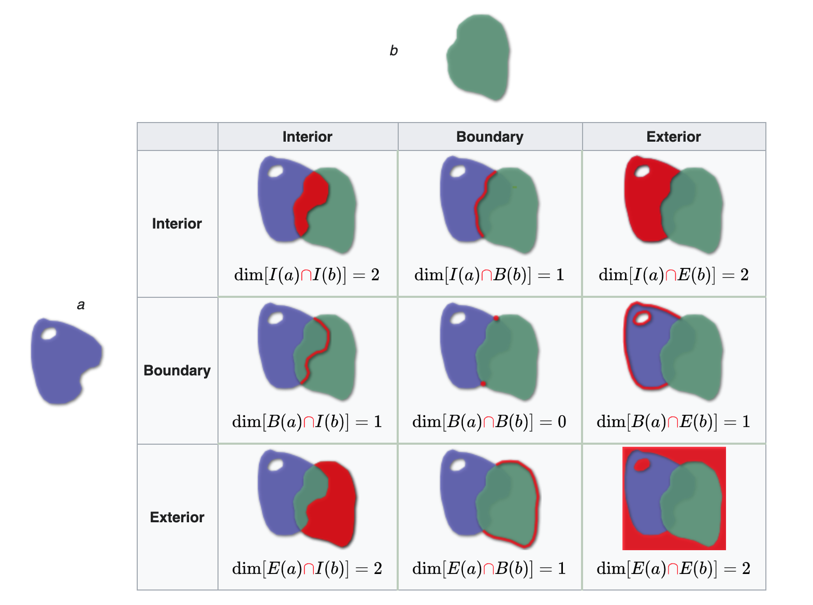
Reading from left-to-right and top-to-bottom, the DE-9IM(a,b) string code is ‘212101212’
Spatial Relations in R
- Geometry X is a 3 feature polygon colored in red
- Geometry Y is a 4 feature polygon colored in blue
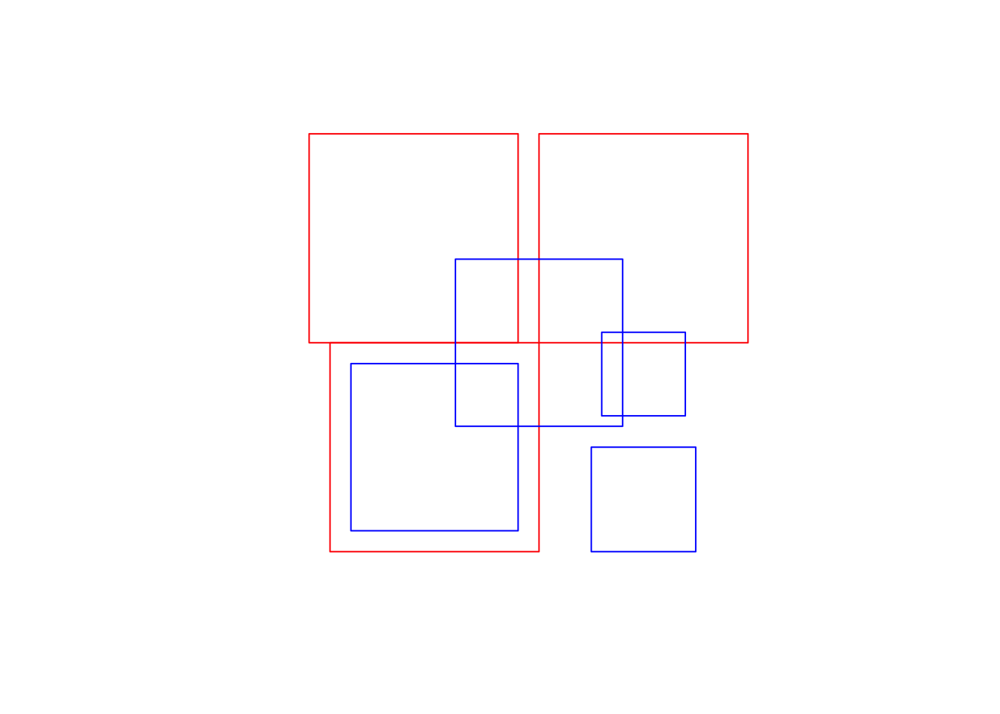
st_relate(x,y)
#> [,1] [,2] [,3] [,4]
#> [1,] "212FF1FF2" "FF2FF1212" "212101212" "FF2FF1212"
#> [2,] "FF2FF1212" "212101212" "212101212" "FF2FF1212"
#> [3,] "FF2FF1212" "FF2FF1212" "212101212" "FF2FF1212"
st_relate(x,x)
#> [,1] [,2] [,3]
#> [1,] "2FFF1FFF2" "FF2F01212" "FF2F11212"
#> [2,] "FF2F01212" "2FFF1FFF2" "FF2FF1212"
#> [3,] "FF2F11212" "FF2FF1212" "2FFF1FFF2"
st_relate(y,y)
#> [,1] [,2] [,3] [,4]
#> [1,] "2FFF1FFF2" "FF2FF1212" "212101212" "FF2FF1212"
#> [2,] "FF2FF1212" "2FFF1FFF2" "212101212" "FF2FF1212"
#> [3,] "212101212" "212101212" "2FFF1FFF2" "FF2FF1212"
#> [4,] "FF2FF1212" "FF2FF1212" "FF2FF1212" "2FFF1FFF2"Named Predicates
“named spatial predicates” have been defined for some common relations.
A few functions can be derived (expressed by masks) from DE-9IM include (* = wildcard):
| Predicate | DE-9IM String Code | Description |
|---|---|---|
| Intersects | T*F**FFF* |
“Two geometries intersect if they share any portion of space” |
| Overlaps | T*F**FFF* |
“Two geometries overlap if they share some but not all of the same space” |
| Equals | T*F**FFF* |
“Two geometries are topologically equal if their interiors intersect and no part of the interior or boundary of one geometry intersects the exterior of the other” |
| Disjoint | FF*FF***** |
“Two geometries are disjoint: they have no point in common. They form a set of disconnected geometries.” |
| Touches | FT******* |
F**T***** |
| Contains | T*****FF** |
“A contains B: geometry B lies in A, and the interiors intersect” |
| Covers | T*****FF* |
*T****FF* |
| Within | *T*****FF* |
**T****FF* |
| Covered by | *T*****FF* |
**T****FF* |
Binary Predicates
Collectively, predicates define the type of relationship each 2D object has with another.
Of the ~ 512 unique relationships offered by the DE-9IM models a selection of ~ 10 have been named.
These are include in PostGIS/GEOS and are made accessible via R sf
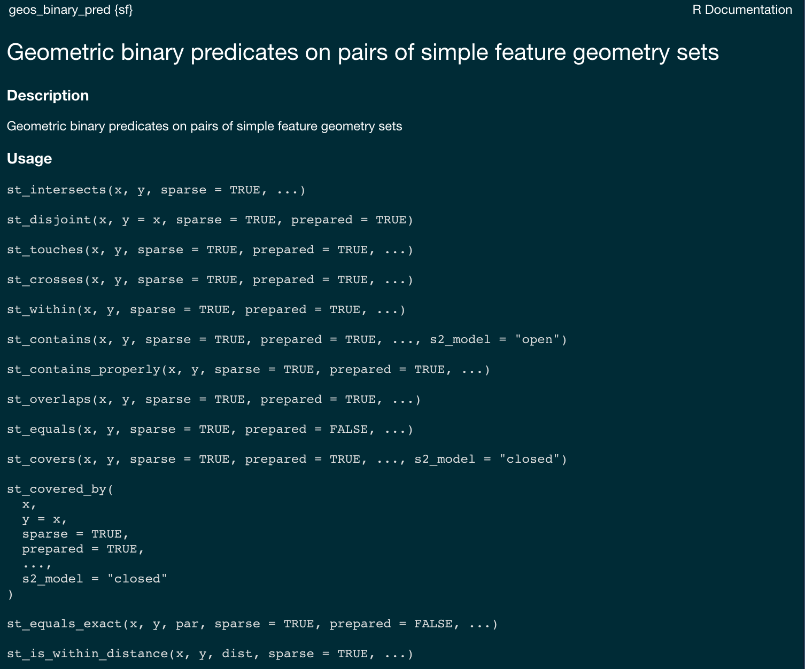
Named predicates in R
sfprovides a set of functions that implement the DE-9IM model and named predicates. Each of these can return either a sparse or dense matrix.
sparse matrix
st_intersects(x,y)
#> Sparse geometry binary predicate list of length 3, where the predicate
#> was `intersects'
#> 1: 1, 3
#> 2: 2, 3
#> 3: 3dense matrix
st_intersects(x, y, sparse = FALSE)
#> [,1] [,2] [,3] [,4]
#> [1,] TRUE FALSE TRUE FALSE
#> [2,] FALSE TRUE TRUE FALSE
#> [3,] FALSE FALSE TRUE FALSE
st_disjoint(x, y, sparse = FALSE)
#> [,1] [,2] [,3] [,4]
#> [1,] FALSE TRUE FALSE TRUE
#> [2,] TRUE FALSE FALSE TRUE
#> [3,] TRUE TRUE FALSE TRUE
st_touches(x, y, sparse = FALSE)
#> [,1] [,2] [,3] [,4]
#> [1,] FALSE FALSE FALSE FALSE
#> [2,] FALSE FALSE FALSE FALSE
#> [3,] FALSE FALSE FALSE FALSE
st_within(x, y, sparse = FALSE)
#> [,1] [,2] [,3] [,4]
#> [1,] FALSE FALSE FALSE FALSE
#> [2,] FALSE FALSE FALSE FALSE
#> [3,] FALSE FALSE FALSE FALSEst_relates vs. predicate calls…
states = filter(aoi_get(state = "all"), state_abbr %in% c("WA", "OR", "MT", "ID")) |>
select(name)
wa = filter(states, name == "Washington")plot(states$geometry)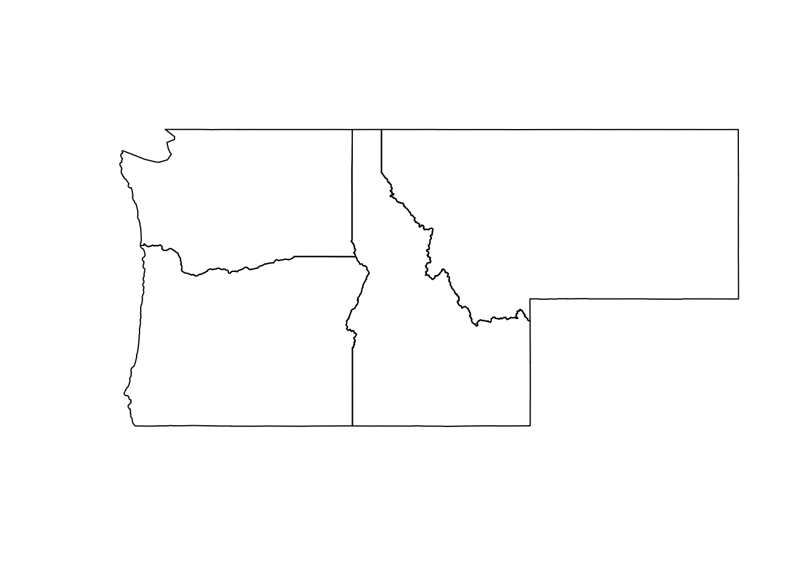
(mutate(states,
deim9 = st_relate(states, wa),
touch = st_touches(states, wa, sparse = F)))
#> Simple feature collection with 4 features and 3 fields
#> Geometry type: MULTIPOLYGON
#> Dimension: XY
#> Bounding box: xmin: -124.8485 ymin: 41.98818 xmax: -104.0397 ymax: 49.00244
#> Geodetic CRS: WGS 84
#> name geometry deim9 touch
#> 1 Idaho MULTIPOLYGON (((-111.0455 4... FF2F11212 TRUE
#> 2 Montana MULTIPOLYGON (((-109.7985 4... FF2FF1212 FALSE
#> 3 Oregon MULTIPOLYGON (((-117.22 44.... FF2F11212 TRUE
#> 4 Washington MULTIPOLYGON (((-121.5237 4... 2FFF1FFF2 FALSESo…
binary predicates return conditional {T,F} relations based on predefined masks of the DE-9IM strings
Up to this point in class we have been using Boolean {T,F} masks to filter data.frames by columns:
fruits = c("apple", "orange", "lemon", "watermelon")fruits == "apple"
#> [1] TRUE FALSE FALSE FALSEfruits %in% c("apple", "lemon")
#> [1] TRUE FALSE TRUE FALSEFiltering on data.frames
- We have used
dplyr::filterto subset a data frame, retaining all rows that satisfy abooleancondition.
mutate(states, equalsWA = (name == "Washington")) |>
st_drop_geometry()
#> name equalsWA
#> 1 Idaho FALSE
#> 2 Montana FALSE
#> 3 Oregon FALSE
#> 4 Washington TRUEfilter(states, name == "Washington")
#> Simple feature collection with 1 feature and 1 field
#> Geometry type: MULTIPOLYGON
#> Dimension: XY
#> Bounding box: xmin: -124.8485 ymin: 45.54364 xmax: -116.9161 ymax: 49.00244
#> Geodetic CRS: WGS 84
#> name geometry
#> 1 Washington MULTIPOLYGON (((-121.5237 4...Spatial Filtering
We can filter spatially, use
st_filteras the function callHere the
booleancondition is not passed (e.g. name == WA)But instead, is defined by a spatial predicate
The default is
st_intersectsbut can be changed with the.predicateargument:
mutate(states,
touch = st_touches(states, wa, sparse = FALSE))
#> Simple feature collection with 4 features and 2 fields
#> Geometry type: MULTIPOLYGON
#> Dimension: XY
#> Bounding box: xmin: -124.8485 ymin: 41.98818 xmax: -104.0397 ymax: 49.00244
#> Geodetic CRS: WGS 84
#> name geometry touch
#> 1 Idaho MULTIPOLYGON (((-111.0455 4... TRUE
#> 2 Montana MULTIPOLYGON (((-109.7985 4... FALSE
#> 3 Oregon MULTIPOLYGON (((-117.22 44.... TRUE
#> 4 Washington MULTIPOLYGON (((-121.5237 4... FALSEst_filter(states, wa, .predicate = st_touches)
#> Simple feature collection with 2 features and 1 field
#> Geometry type: MULTIPOLYGON
#> Dimension: XY
#> Bounding box: xmin: -124.7035 ymin: 41.98818 xmax: -111.0435 ymax: 49.00085
#> Geodetic CRS: WGS 84
#> name geometry
#> 1 Idaho MULTIPOLYGON (((-111.0455 4...
#> 2 Oregon MULTIPOLYGON (((-117.22 44....Result
ggplot(states) +
geom_sf() +
geom_sf(data = wa, fill = "blue", alpha = .3) +
geom_sf(data = st_filter(states, wa, .predicate = st_touches), fill = "red", alpha = .5) +
theme_void()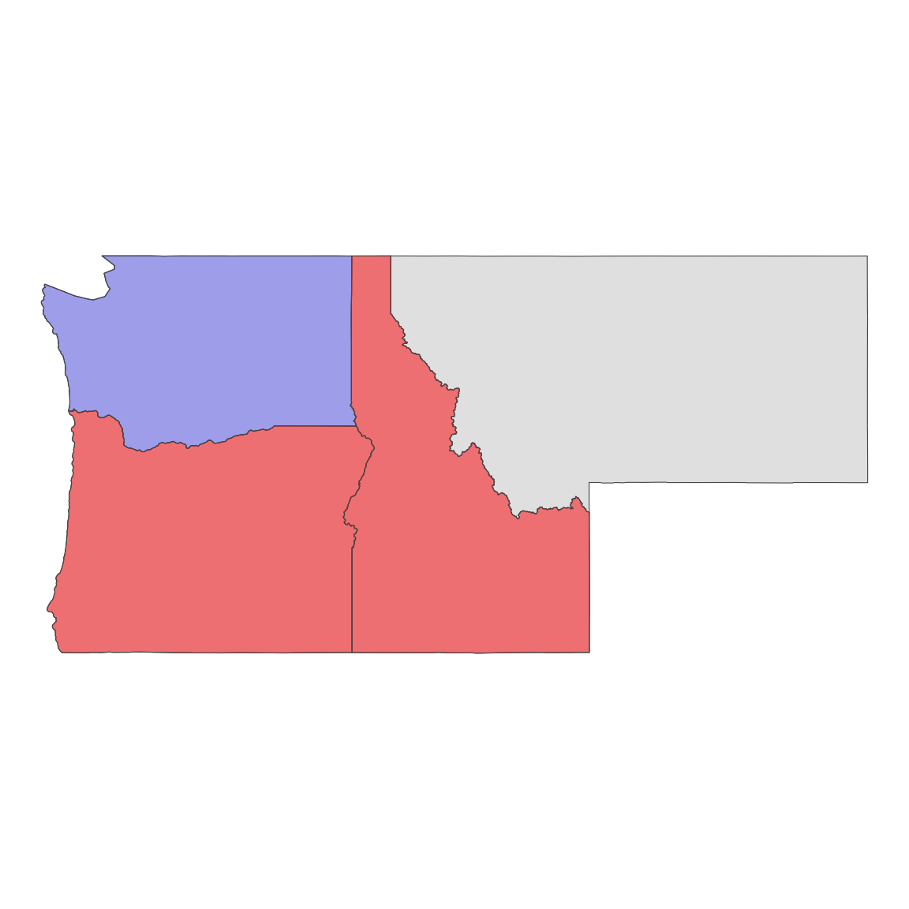
Distance Example (additional parameter)
cities = read_csv("../labs/data/uscities.csv") |>
st_as_sf(coords = c("lng", "lat"), crs = 4326) |>
select(city, population, state_name) |>
st_transform(5070)st_filter(cities,
filter(cities, city == "Fort Collins"),
.predicate = st_is_within_distance, 10000)
#> Simple feature collection with 2 features and 3 fields
#> Geometry type: POINT
#> Dimension: XY
#> Bounding box: xmin: -760147.5 ymin: 1982249 xmax: -751658.3 ymax: 1984621
#> Projected CRS: NAD83 / Conus Albers
#> # A tibble: 2 × 4
#> city population state_name geometry
#> * <chr> <dbl> <chr> <POINT [m]>
#> 1 Fort Collins 339256 Colorado (-760147.5 1984621)
#> 2 Timnath 8007 Colorado (-751658.3 1982249)Spatial Data Science
Filtering is a nice way to reduce the dimensions of a single dataset
Often “… one table is not enough… ”
In these cases we want to combine - or join - data
Spatial Joining
- Joining two non-spatial datasets relies on a shared key that uniquely identifies each record in a table

Spatially joining data relies on shared geographic relations rather then a shared key
Like filter, these relations can be defined by a predicate
As with tabular data, mutating joins add data to the target object (x) from a source object (y).
st_join
In
sfst_joinprovides this joining capacityBy default,
st_joinperforms a left join (Returns all records from x, and the matched records from y)

- It can also do inner joins by setting
left = FALSE.
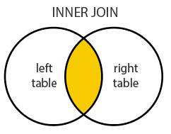
The default predicate for
st_join(andst_filter) isst_intersectsThis can be changed with the join argument (see
?st_joinfor details).
Every Starbucks in the World
What county has the most Starbucks in each state?
(starbucks = readr::read_csv('../labs/data/directory.csv') |>
filter(!is.na(Latitude), Country == "US") |>
st_as_sf(coords = c("Longitude", "Latitude"), crs = 4326) |>
st_transform(5070))
#> Simple feature collection with 13608 features and 11 fields
#> Geometry type: POINT
#> Dimension: XY
#> Bounding box: xmin: -6223543 ymin: 278590.9 xmax: 2122577 ymax: 5307178
#> Projected CRS: NAD83 / Conus Albers
#> # A tibble: 13,608 × 12
#> Brand `Store Number` `Store Name` `Ownership Type` `Street Address` City
#> * <chr> <chr> <chr> <chr> <chr> <chr>
#> 1 Starbucks 3513-125945 Safeway-Anc… Licensed 5600 Debarr Rd … Anch…
#> 2 Starbucks 74352-84449 Safeway-Anc… Licensed 1725 Abbott Rd Anch…
#> 3 Starbucks 12449-152385 Safeway - A… Licensed 1501 Huffman Rd Anch…
#> 4 Starbucks 24936-233524 100th & C S… Company Owned 320 W. 100th Av… Anch…
#> 5 Starbucks 8973-85630 Old Seward … Company Owned 1005 E Dimond B… Anch…
#> 6 Starbucks 72788-84447 Fred Meyer … Licensed 1000 E Northern… Anch…
#> 7 Starbucks 79549-106150 Safeway - A… Licensed 3101 PENLAND PK… Anch…
#> 8 Starbucks 75988-107245 ANC Main Te… Licensed HMSHost, 500 We… Anch…
#> 9 Starbucks 11426-99254 Tudor Rd an… Company Owned 110 W. Tudor Rd… Anch…
#> 10 Starbucks 20349-108249 Fred Meyer-… Licensed 7701 Debarr Road Anch…
#> # ℹ 13,598 more rows
#> # ℹ 6 more variables: `State/Province` <chr>, Country <chr>, Postcode <chr>,
#> # `Phone Number` <chr>, Timezone <chr>, geometry <POINT [m]>counties = aoi_get(state = "conus", county = "all") |>
st_transform(5070) |>
select(name, state_name)topSB <- st_join(counties, starbucks) |>
group_by(name, state_name) |>
summarise(n = n()) |>
group_by(state_name) |>
slice_max(n, n = 1) |>
ungroup()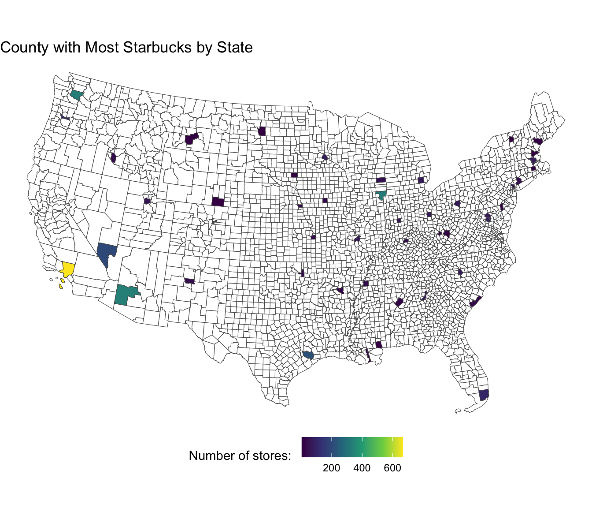
- Neither joining nor filtering spatially alter the underlying geometry of the features
- In cases where we seek to alter a geometry based on another, we need clipping methods
Clipping
Clipping is a form of subsetting that involves changing the geometry of at least some features.
Clipping can only apply to features more complex than points: (lines, polygons and their ‘multi’ equivalents).
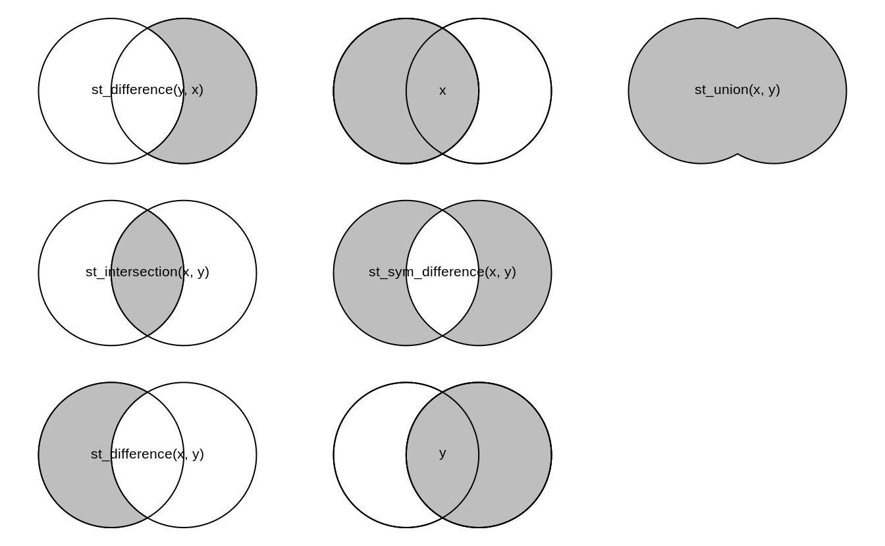
Spatial Subsetting
- By default the data.frame subsetting methods we’ve seen (e.g
[,]) implementsst_intersection
wa = st_transform(wa, 5070)
wa_starbucks = starbucks[wa,] #<<
ggplot() + geom_sf(data = wa) + geom_sf(data = wa_starbucks) + theme_void()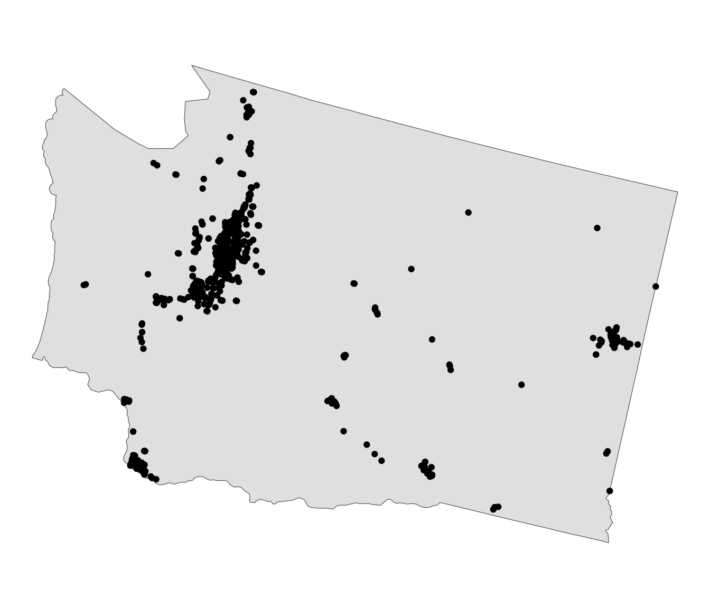
Simplification
Computational Complexity
In all the cases we have looked at, the number of
POINT(e.g geometries, nodes, or vertices) define the complexity of the predicate or the clipComputational needs increase with the number of POINTS / NODES / VERTICES
Simplification is a process for generalization vector objects (lines and polygons)
Another reason for simplifying objects is to reduce the amount of memory, disk space and network bandwidth they consume
Other times the level of detail captured in a geometry is either not needed, or, even counter productive the the scale/purpose of an analysis
If you are cropping features to a national border, how much detail do you need? The more points in your border, the long the clip operation will take….
In cases where we want to reduce the complexity in a geometry we can use simplification algorithms
The most common algorithms are Ramer–Douglas–Peucker and Visvalingam-Whyatt.
Ramer–Douglas–Peucker
Mark the
firstandlastpoints as keptFind the point,
pthat is the farthest from the first-last line segment. If there are no points between first and last we are done (the base case)If
pis closer thantoleranceunits to the line segment then everything between first and last can be discardedOtherwise, mark p as kept and repeat steps 1-4 using the points between first and p and between p and last (the call to recursion)

st_simplify
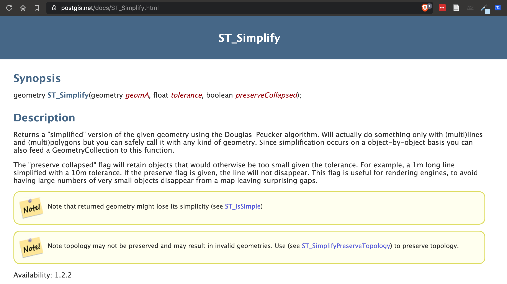
st_simplify
sfprovidesst_simplify, which uses the GEOS implementation of the Douglas-Peucker algorithm to reduce the vertex count.st_simplifyuses thedToleranceto control the level of generalization in map units (see Douglas and Peucker 1973 for details).
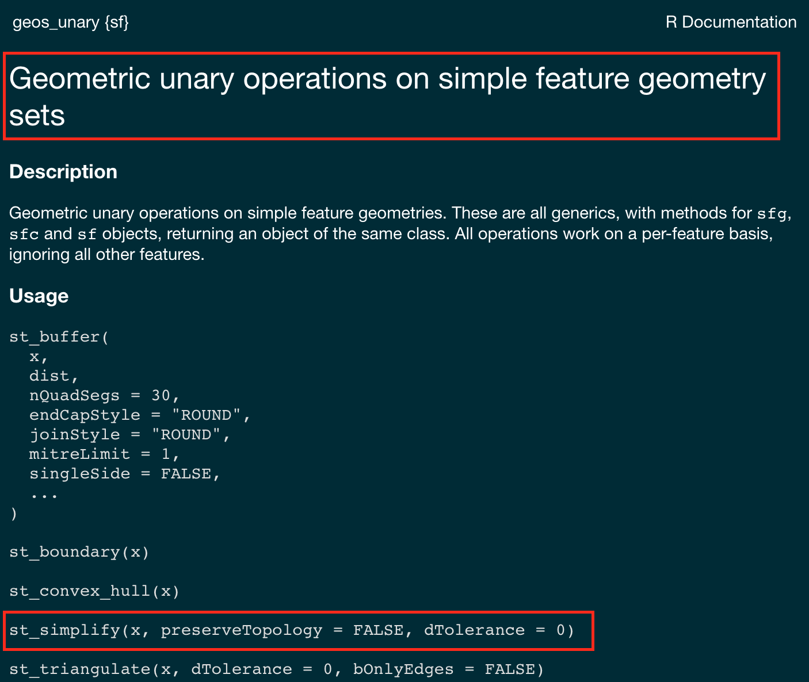
usa = aoi_get(state = "conus") |>
st_union() |>
st_transform(5070)
usa1000 = st_simplify(usa, dTolerance = 10000)
usa10000 = st_simplify(usa, dTolerance = 100000)
usa100000 = st_simplify(usa, dTolerance = 1000000)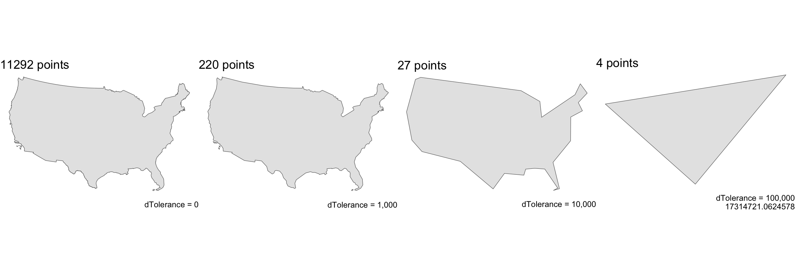
A limitation with Douglas-Peucker (therefore st_simplify) is that it simplifies objects on a per-geometry basis.
This means the ‘topology’ is lost, resulting in overlapping and disconnected geometries.
states = st_transform(states, 5070)
simp_states = st_simplify(states, dTolerance = 20000)
plot(simp_states$geometry)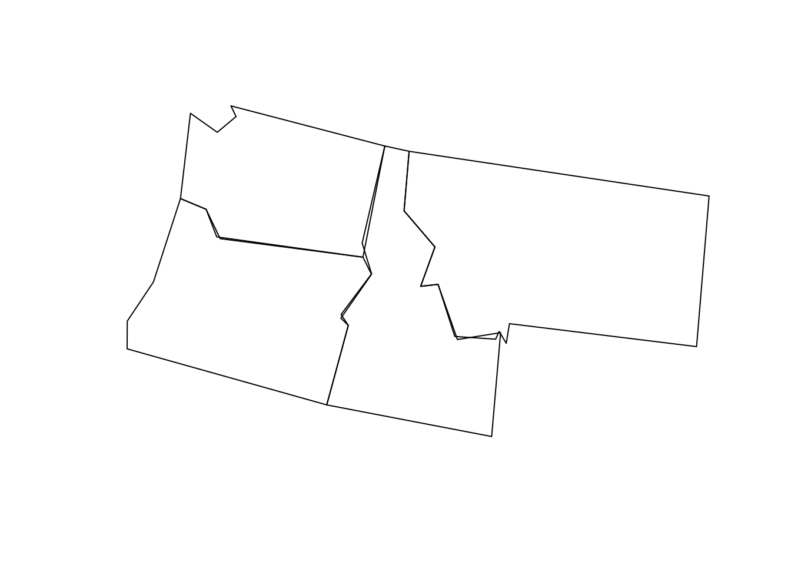
Visvalingam
- The Visvalingam algorithm overcomes some limitations of the Douglas-Peucker algorithm (Visvalingam and Whyatt 1993).
- it progressively removes points with the least-perceptible change.
- Simplification often allows the elimination of 95% or more points while retaining sufficient detail for visualization and often analysis
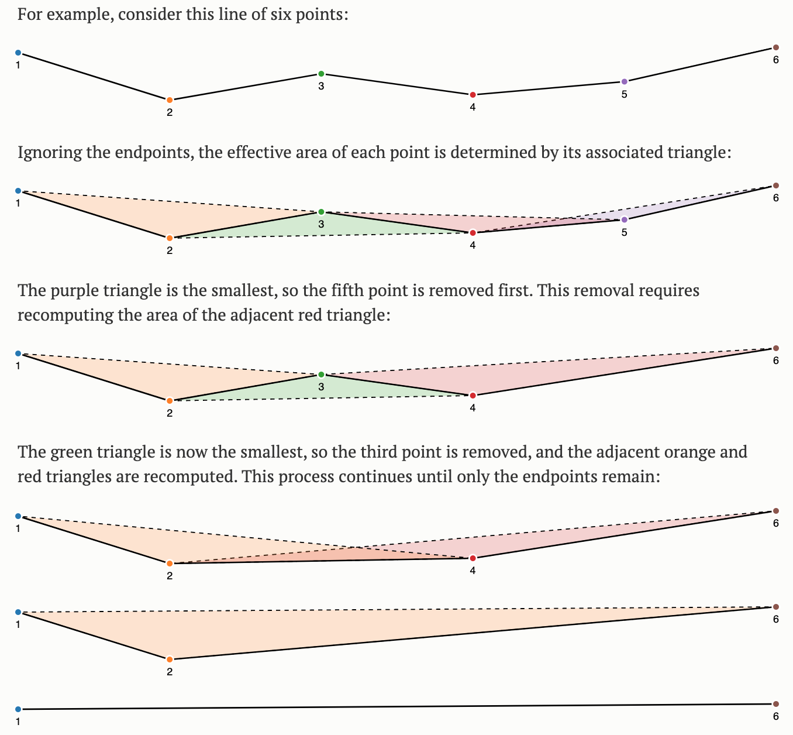
rmapshaper
In R, the rmapshaper package implements the Visvalingam algorithm in the ms_simplify function.
- The
ms_simplifyfunction is a wrapper around themapshaperJavaScript library (created by lead viz experts at the NYT)
library(rmapshaper)
usa10 = ms_simplify(usa, keep = .1)
usa5 = ms_simplify(usa, keep = .05)
usa1 = ms_simplify(usa, keep = .01)
states = st_transform(states, 5070)
simp_states = ms_simplify(states, keep = .05)
plot(simp_states$geometry)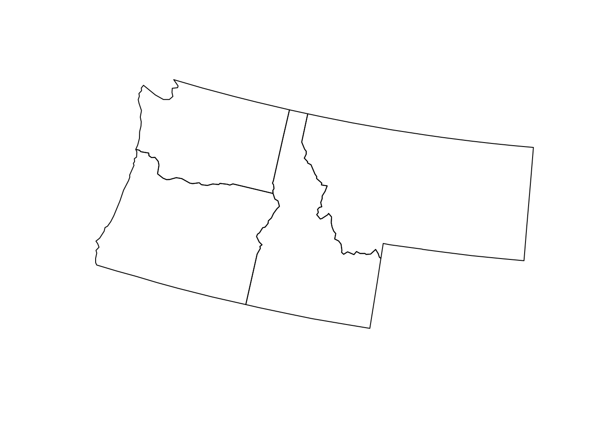
In all cases, the number of points in a geometry can be calculated with mapview::npts()
states = st_transform(states, 5070)
simp_states_st = st_simplify(states, dTolerance = 20000)
simp_states_ms = ms_simplify(states, keep = .05)
mapview::npts(states)
#> [1] 5930
mapview::npts(simp_states_st)
#> [1] 50
mapview::npts(simp_states_ms)
#> [1] 292Tesselation
So far we have spent the last few days looking at simple feature objects
Where a feature as a geometry define by a set of structured POINT(s)
These points have precision and define location ({X Y CRS})
The geometry defines a bounds: either 0D, 1D or 2D
Each object is therefore bounded to those geometries implying a level of exactness.
Core Concepts of Spatial Data: (Kuhn 2012)
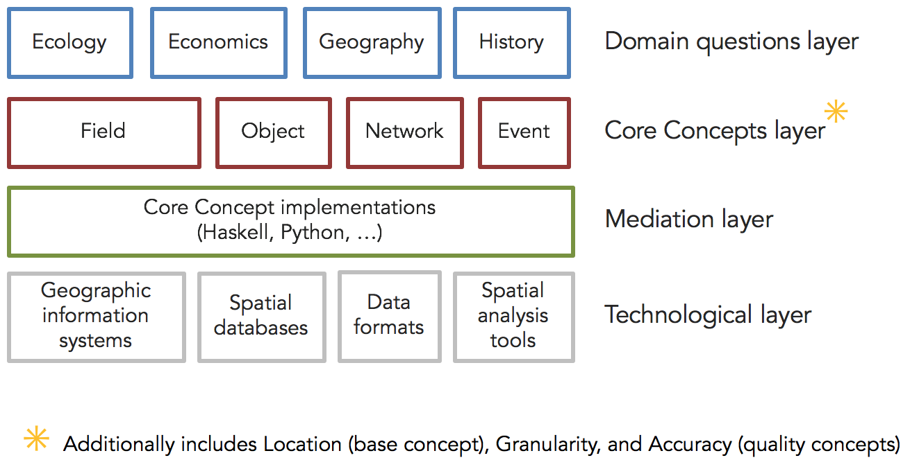
Core Concepts of Spatial Data: (Kuhn 2012)
One Base Concept: Location
Four Content Concepts: Field, Object, Network, Event
Two Quality Concepts: Granularity, Accuracy
Core Concepts of Spatial Data: (Kuhn 2012)
One Base Concept: Location (coordinates)
Four Content Concepts: Field (raster), Object (simple feature),
Network,EventTwo Quality Concepts: Granularity (simplification), Accuracy (taken for granted)
Object View
Objects describe individuals that have an identity (id) as well as spatial, temporal, and thematic properties.
Answers questions about properties and relations of objects.
Results from fixing theme, controlling time, and measuring space.
Features, such as surfaces, depend on objects (but are also objects)
Object View
Object implies boundedness
- boundaries may not be known or even knowable, but have limits.
Crude examples of such limits are the minimal bounding boxes used for indexing and querying objects in databases.
Many objects (particularly natural ones) do not have crisp boundaries (watersheds)
Differences between spatial information from multiple sources are often caused by more or less arbitrary delineations through context-dependent boundaries.
Many questions about objects and features can be answered without boundaries, using simple point representations (centroids) with thematic attributes.
Field View
Fields describe phenomena that have a scalar or vector attribute everywhere in a space of interest
- for example, air temperatures, rainfall, elevation, land cover
Field information answers the question what is here?, where here can be anywhere in the space considered.
Field-based spatial information can also represent attributes that are computed rather than measured, such as probabilities or densities.
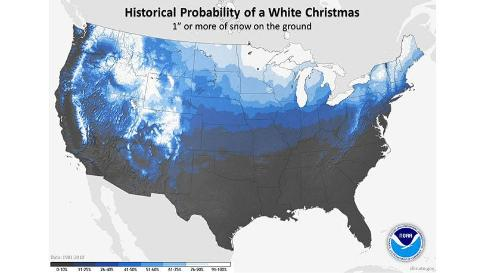
Together, fields and objects are the two fundamental ways of structuring spatial information.
Objects can provide coverage:
Both objects and fields can cover space continuously - the primary difference is that objects prescribe bounds.
Counties are one form of object that covers the USA seamlessly
State objects are another …
Object Coverages
LANDSAT Path Row
- Serves tiles based on a path/row index
#> Warning in layer_sf(geom = GeomSf, data = data, mapping = mapping, stat = stat,
#> : Ignoring unknown aesthetics: label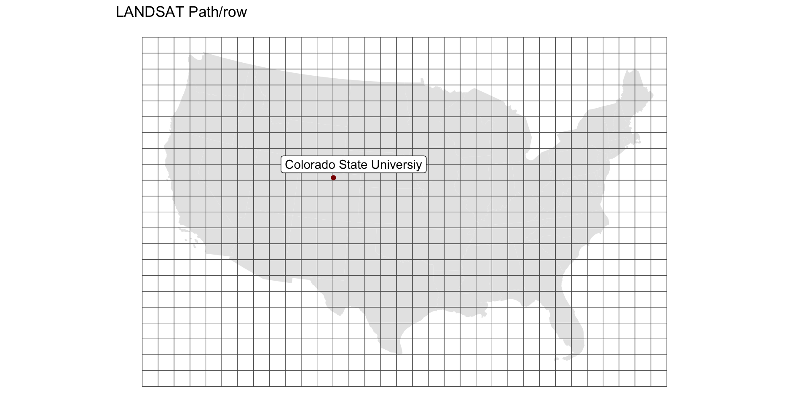
MODIS Sinisoial Grid
- Serves tiles based on a path/row index
#> Warning: st_crs<- : replacing crs does not reproject data; use st_transform for
#> that
#> Warning in layer_sf(geom = GeomSf, data = data, mapping = mapping, stat = stat,
#> : Ignoring unknown aesthetics: label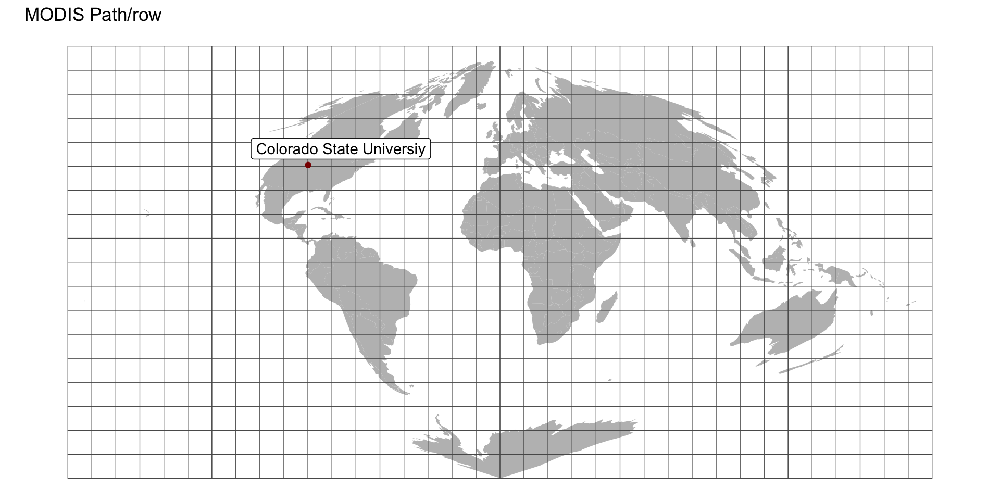
Uber Hex Addressing
- Breaks the world into Hexagons…
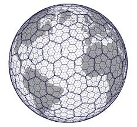
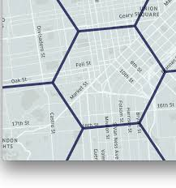
what3word
- Breaks the world into 3m grids encoded with unique 3 word strings
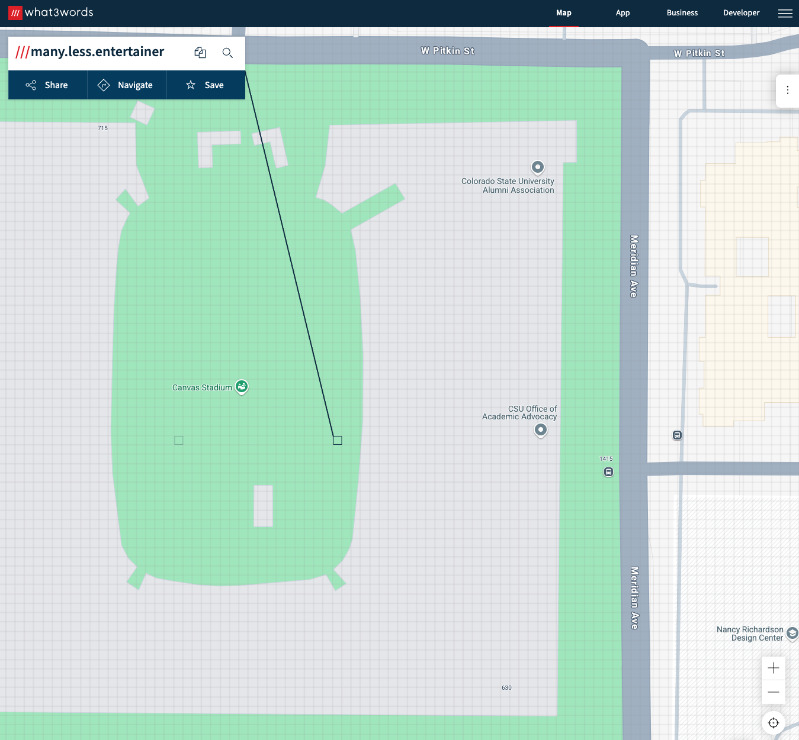
Map Tiles / slippy maps / Pyramids
- Use XYZ where Z is a zoom level …
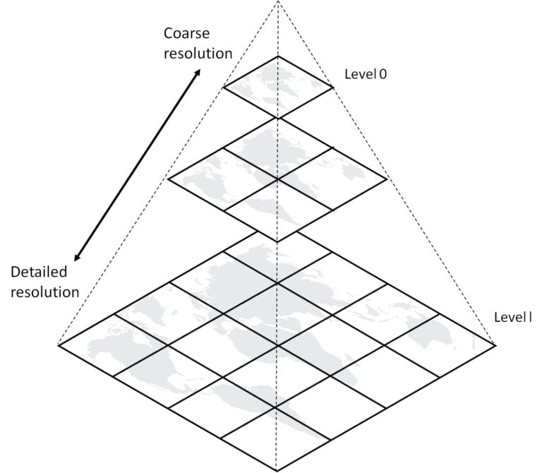
Our Data for today …
Southern Counties
south_counties = aoi_get(state = "south", county = "all") |>
st_transform(st_crs(cities))Unioned to States using dplyr
south_states = south_counties |>
group_by(state_name) |>
summarise()South County Centroids
south_cent = st_centroid(south_counties)
#> Warning: st_centroid assumes attributes are constant over geometries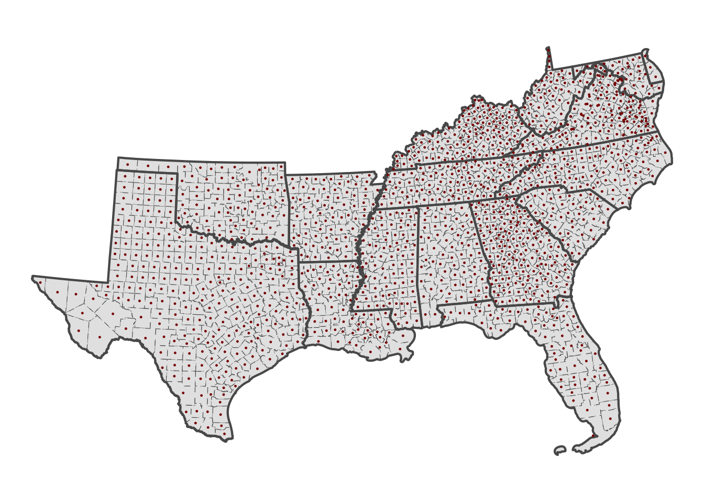
Southern Coverage: County

Regular Tiles
One way to tile a surface is into regions of equal area
Tiles can be either square (rectilinear) or hexagonal
st_make_gridgenerates a square or hexagonal grid covering the geometry of ansforsfcobjectThe return object of
st_make_gridis a newsfcobjectGrids can be specified by cellsize or number of grid cells (n) in the X and Y direction
# Create a grid over the south with 70 rows and 50 columns
sq_grid = st_make_grid(south_counties, n = c(70, 50)) |>
st_as_sf() |>
mutate(id = 1:n())Southern Coverage: Square
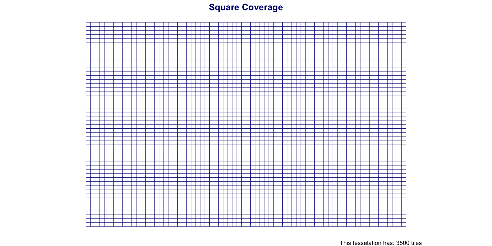
Hexagonal Grid
Hexagonal tessellations (honey combs) offer an alternative to square grids
They are created in the same way but by setting
square = FALSE
hex_grid = st_make_grid(south_counties, n = c(70, 50), square = FALSE) |>
st_as_sf() |>
mutate(id = 1:n())Southern Coverage: Hexagon
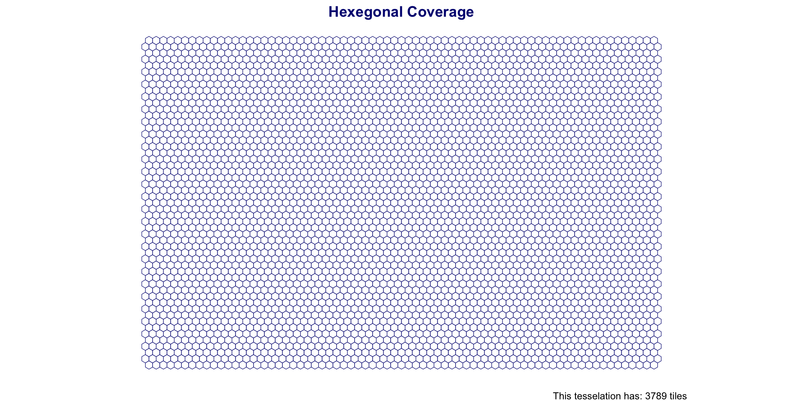
Advantages Square Grids
Simple definition and data storage
- Only need the origin (lower left), cell size (XY) and grid dimensions
Easy to aggregate and dissaggregate (resample)
Analogous to raster data
Relationship between cells is given
Combining layers is easy with traditional matrix algebra
Advantages Square Grids
- Reduced Edge Effects
- Lower perimeter to area ratio
- minimizes the amount line length needed to create a lattice of cells with a given area
- All neighbors are identical
- No rook vs queen neighbors
- Better fit to curve surfaces (e.g. the earth)
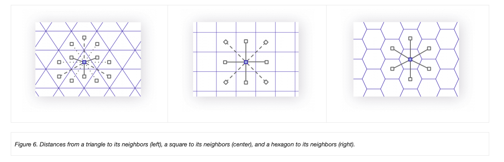
Triangulations
An alternative to creating equal area tiles is to create triangulations from known anchor points
Triangulation requires a set of input points and seeks to partition the interior into a partition of triangles.
In GIS contexts you’ll hear:
- Thiessen Polygon
- Voronoi Regions
- Delunay Triangulation
- TIN (Triangular irregular networks)
- etc,..
Voronoi Polygons
Voronoi/Thiessen polygon boundaries define the area closest to each anchor point relative to all others
They are defined by the perpendicular bisectors of the lines between all points.
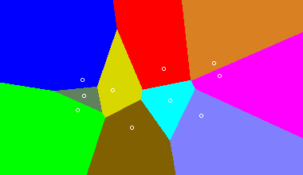
Voronoi Polygons

Voronoi Polygons
- Usefull for tasks such as:
- nearest neighbor search,
- facility location (optimization),
- largest empty areas,
- path planning…
- Also useful for simple interpolation of values such as rain gauges,
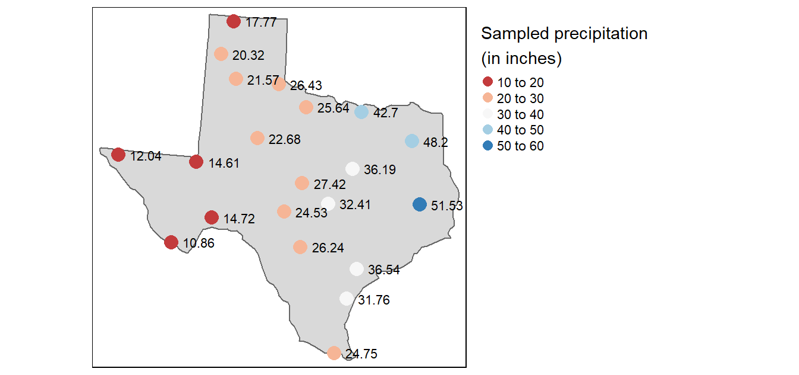
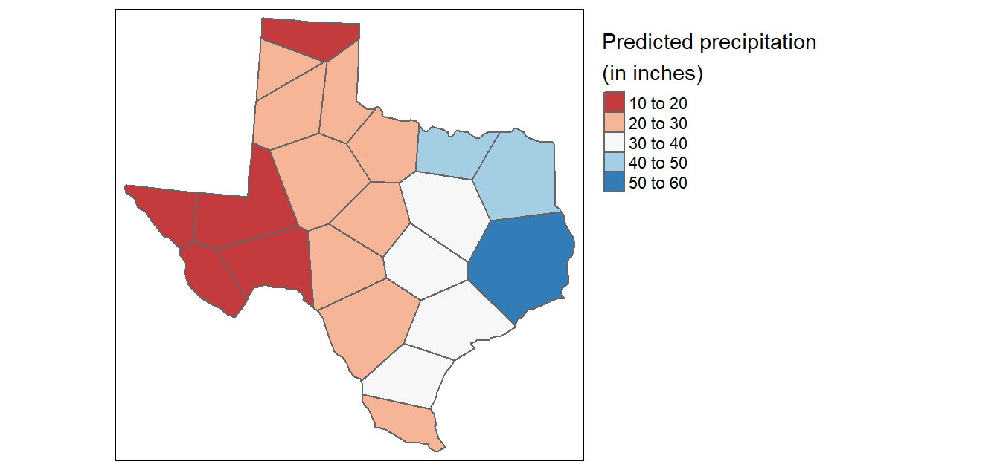
Often used in numerical models and simulations
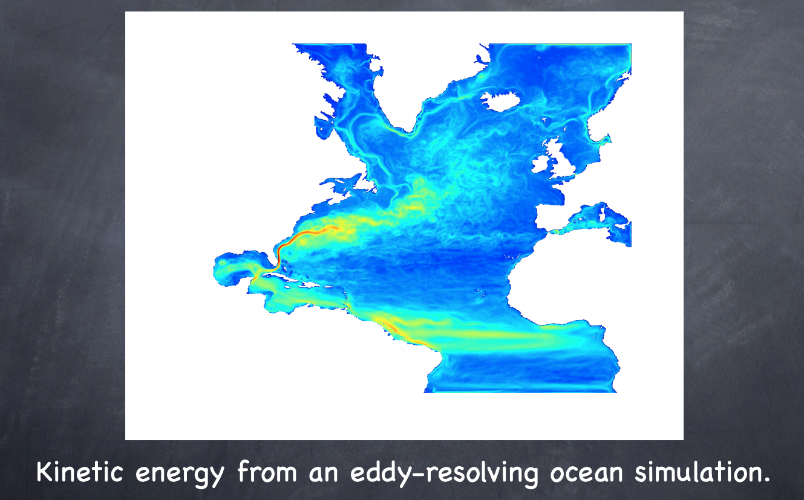
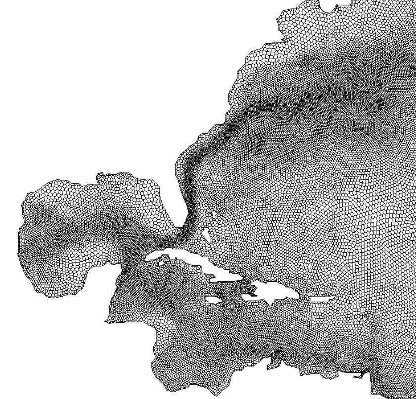
st_voronoi
st_voronoi creates voronoi tesselation in
sfIt works over a
MULTIPOINTcollectionShould always be simplified after creation (st_cast())
If to be treated as an object for analysis, should be id’d
south_cent_u = st_union(south_cent)
v_grid = st_voronoi(south_cent_u) |>
st_cast() |>
st_as_sf() |>
mutate(id = 1:n())Southern Coverage: Voronoi
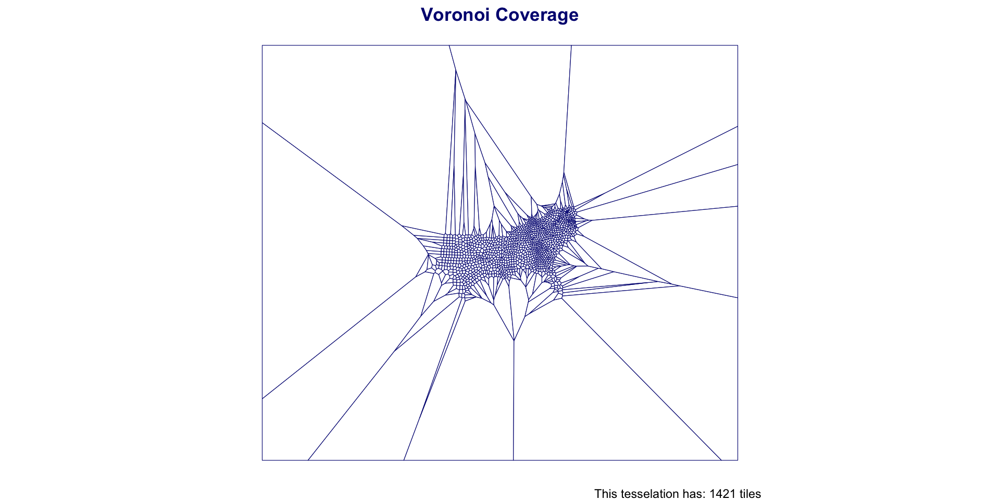
Southern Coverage: Voronoi
#> Warning: attribute variables are assumed to be spatially constant throughout
#> all geometries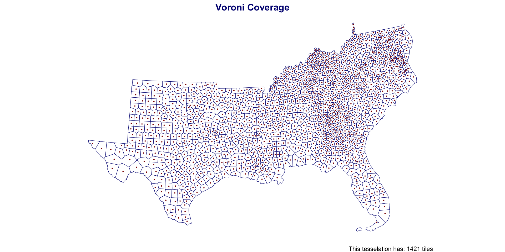
Delaunay triangulation
- A Delaunay triangulation for a given set of points (P) in a plane, is a triangulation DT(P), where no point is inside the circumcircle of any triangle in DT(P).
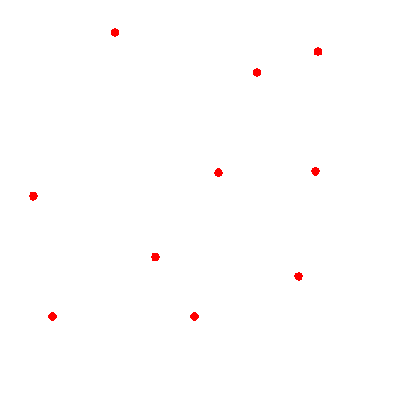
Delaunay triangulation
The Delaunay triangulation of a discrete POINT set corresponds to the dual graph of the Voronoi diagram.
The circumcenters (center of circles) of Delaunay triangles are the vertices of the Voronoi diagram.
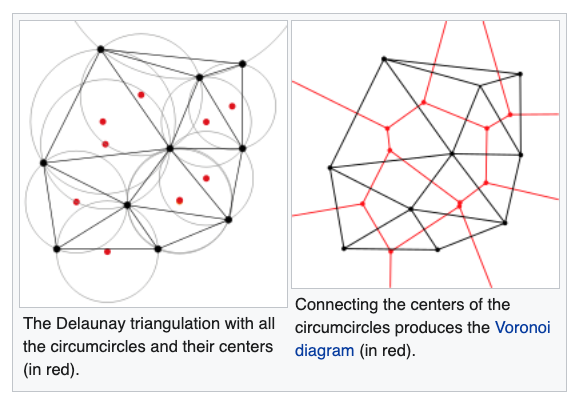
Used in landscape evaluation and terrian modeling
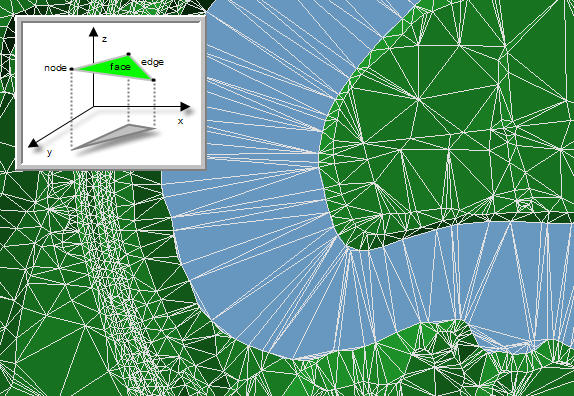
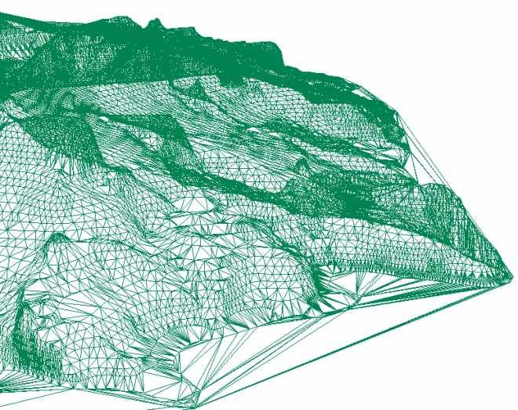
st_triangulate
st_triangulatecreates Delaunay triangulation insfIt works over a
MULTIPOINTcollectionShould always be simplified after creation (
st_cast())If to be treated as an object for analysis, should be id’d
t_grid = st_triangulate(south_cent_u) |>
st_cast() |>
st_as_sf() |>
mutate(id = 1:n())Southern Coverage: Triangles
Southern Coverage: Triangles
t_grid = st_intersection(t_grid, st_union(south_states))
#> Warning: attribute variables are assumed to be spatially constant throughout
#> all geometriesDifference in object coverages:
| Type | Elements | Mean Area (km2) | Standard Deviation Area (km2) | Coverage Area |
|---|---|---|---|---|
| triangulation | 2,828 | 832 | 557 | 2,352,288 |
| voroni | 1,421 | 1,688 | 1,046 | 2,398,383 |
| counties | 1,421 | 1,688 | 1,216 | 2,398,383 |
| grid | 3,500 | 1,470 | 0 | 5,144,369 |
| Hexagon | 3,789 | 1,425 | 0 | 5,398,416 |
Modifiable areal unit problem (MAUP)
The modifiable areal unit problem (MAUP) is a source of statistical bias that can significantly impact the results of statistical hypothesis tests.
MAUP affects results when point-based measures are aggregated into districts.
The resulting summary values (e.g., totals or proportions) are influenced by both the shape and scale of the aggregation unit.
Real World Example
The power of GIS is the ability to integrate different layers and types of information
The scale of information can impact the analysis as can the grouping and zoning schemes chosen
The Modifiable Areal Unit Problem (MAUP) is an important issue for those who conduct spatial analysis using units of analysis at aggregations higher than incident level.
The MAUP occurs when the aggregate units of analysis are arbitrarily produced or not directly related to the underlying phenomena. A classic example of this problem is Gerrymandering.
Gerrymandering involves shaping and re-shaping voting districts based on the political affiliations of the resident citizenry.
Examples
Wrap up
Today we covered the following topics: - Spatial predicates and binary predicates - Spatial filtering and joining - Spatial simplification - Spatial tessellations / Coverages - Modifiable areal unit problem (MAUP)
Combined with your understanding of
- Geometry and topology
- Coordinate Reference Systems
- Their integration with R
We are well suited to move on to raster data (gridded coverage model!) next week
Congrats!!